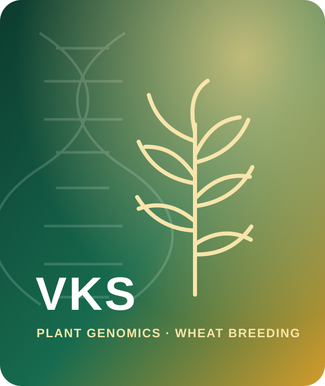

🌾
Plant materials
Diverse germplasm, doubled-haploid populations and elite breeding material.
Postdoctoral Research Associate · Murdoch University
I investigate the genetic and regulatory basis of crop performance, with a focus on wheat nitrogen-use efficiency, stress resilience, molecular markers and data-driven breeding.

About
I am a geneticist and plant breeder working at the intersection of molecular biology, quantitative genetics, computational genomics and field-based wheat improvement.
My PhD research examined the molecular genetics of cereal cyst nematode resistance in wheat. My broader work spans biotic and abiotic stress, fructan metabolism, GWAS and QTL mapping, genomic prediction, candidate-gene discovery and molecular-marker development.
At Murdoch University's Centre for Crop & Food Innovation, my current work contributes to genomics-assisted improvement of wheat nitrogen-use efficiency across controlled and multi-environment experiments.
Research system
My research links controlled experiments, field phenotyping and genomics in a single translational workflow.
Diverse germplasm, doubled-haploid populations and elite breeding material.
Controlled stress platforms and multi-location field trials for yield, quality and NUE.
GWAS, QTL mapping, QTL-seq, transcriptomics and regulatory genomics.
Candidate validation, haplotypes, KASP markers, genomic prediction and donor selection.
Featured work
Integrating multi-location phenotyping and genomic analysis to identify, validate and deploy loci associated with grain yield, grain protein and nitrogen-use efficiency in Australian wheat.
A discovery-to-deployment concept connecting repeated nitrogen stress–recovery phenotyping, RNA-seq, DNA methylation, sequence variants, KASP markers and elite donor germplasm.
Genetic dissection of resistance in spring and winter wheat using phenotyping, single- and multi-locus GWAS, QTL mapping and candidate-gene analysis.
Read publication ↗Developing practical selection tools from genomic regions associated with stress adaptation, nutritional quality and agronomic performance.
Genome-wide analysis of physiological and yield-related responses to heat stress, with a focus on robust loci for climate-ready wheat improvement.
Multi-environment, multi-locus GWAS to identify genomic regions supporting nutritional improvement without compromising agronomic value.
Read publication ↗Capabilities
A combined toolkit for moving between field biology, molecular genetics and computational analysis.
Current concept
Repeated nitrogen stress–recovery cycles are used to identify coordinated expression and methylation responses. High-confidence regulatory loci are then connected to stable sequence variants, breeder-compatible markers and elite germplasm.
Selected publications
BMC Plant Biology · Multi-location and multi-year analysis
Current Microbiology · Marker validation and deployment
Scientific Reports · GWAS and resistance genetics
Academic journey
Genetics and Plant Breeding, Chaudhary Charan Singh University, India.
Plant Protection, Chaudhary Charan Singh University.
Centre for Crop & Food Innovation, Murdoch University, Western Australia.
Collaboration
I welcome conversations on wheat genomics, nitrogen-use efficiency, molecular breeding, stress resilience and collaborative research.